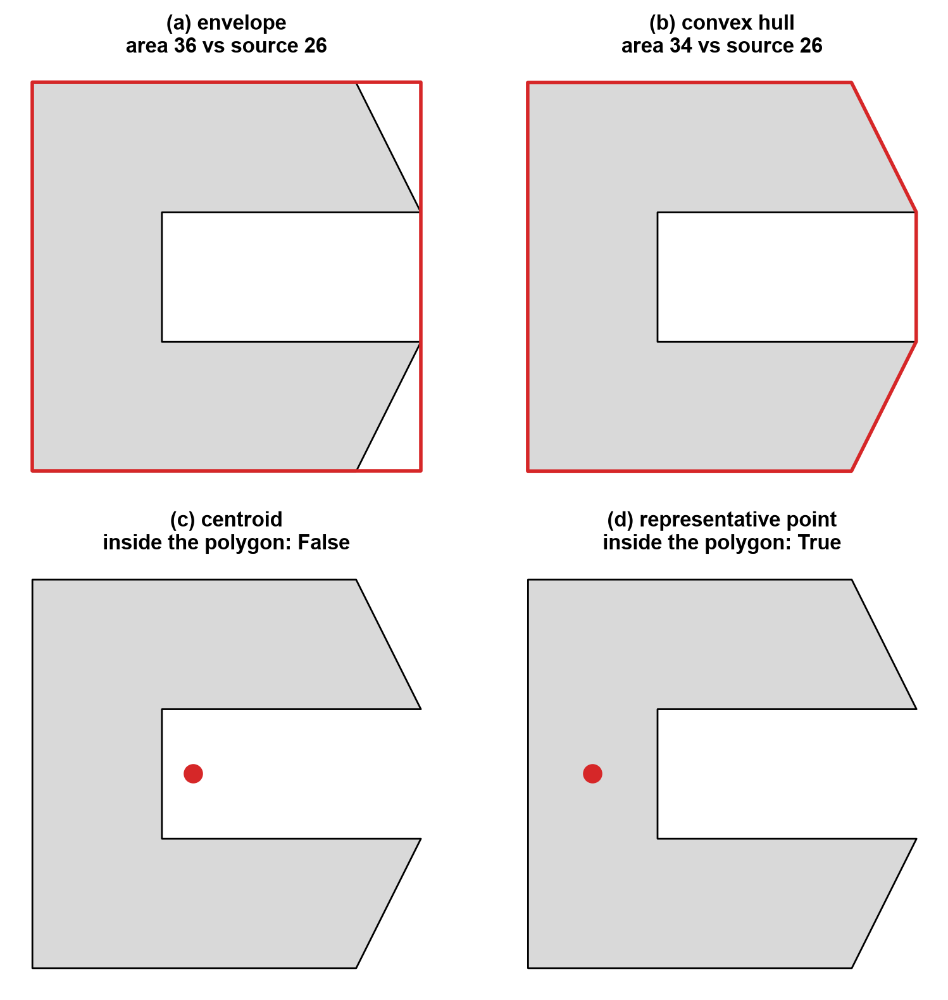
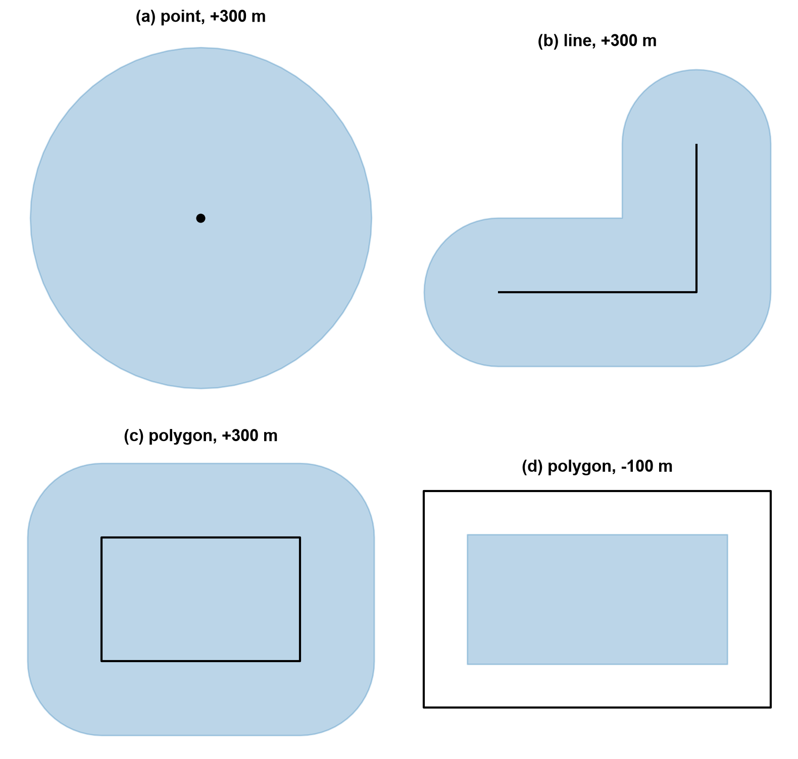
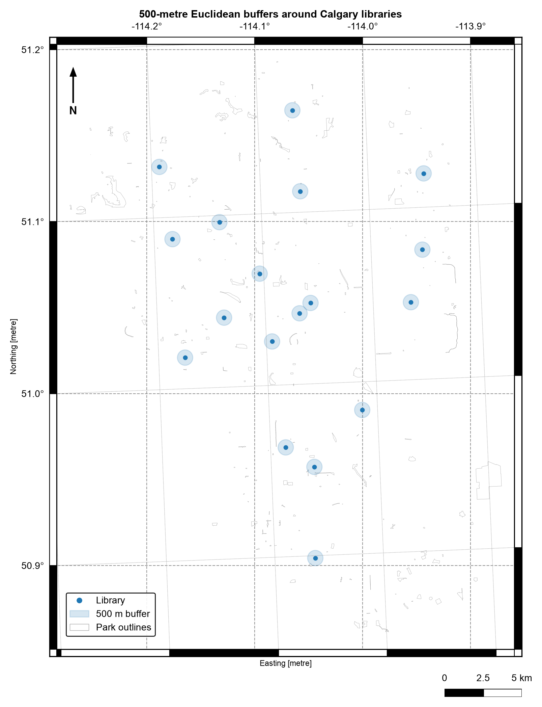

4.2. Geometric Operations and Measurements#
4.2.1. Learning objectives#
By the end of this section, you should be able to:
choose an operation from a spatial question;
distinguish measurements from geometry transformations;
explain why metric operations require a projected CRS;
state what area, length, and distance report for each geometry type;
derive envelopes, centroids, convex hulls, buffers, and representative points, and explain what each one means;
simplify geometries and describe the trade-off;
explain how a spatial index filters candidates, and compare a slow pairwise loop with an indexed spatial operation; and
check units, geometry types, and plausible ranges after an operation.
Section goal
Use Calgary parks, libraries, and LRT tracks to calculate meaningful areas and lengths, then create proximity zones without confusing a Euclidean buffer with a network route.
4.2.2. Start with the question#
Every operation in this section answers a specific kind of spatial question. Table 4.8 maps common questions to the GeoPandas [Jordahl et al., 2020] operation or property that answers them.
Question |
Operation or property |
|---|---|
How large is each park? |
|
How long is each track segment? |
|
What is within 500 metres of a library? |
|
What is the smallest box around a layer? |
|
Where can a park be labelled? |
|
What is the smallest convex shape covering the libraries? |
|
How can a layer be made lighter for display? |
|
A transformation changes geometry; a measurement reports a property of a geometry. Both must be interpreted in the CRS units. In EPSG:4326, an area is in square degrees and a distance is in degrees, so those values are not suitable for metric reporting.
4.2.3. Why metric operations need a projected CRS#
Every measurement inherits the units of the CRS, so the first decision in this section is which kind of CRS the coordinates use. Table 4.9 compares the two kinds.
Property |
Geographic (for example EPSG:4326) |
Projected (for example UTM) |
|---|---|---|
Coordinates |
Longitude and latitude on an ellipsoid |
Easting and northing on a plane |
Units |
Degrees |
Metres |
Metric results |
Not meaningful |
Meaningful inside the zone it was designed for |
Best for |
Storage, exchange, web maps |
Area, length, distance, buffers |
A degree is not a constant length. A degree of latitude is about 111 km everywhere, but a
degree of longitude shrinks with the cosine of the latitude, to roughly 70 km at Calgary.
An area in square degrees, or a buffer(500) that means 500 degrees, therefore has no
physical meaning, and GeoPandas warns when you ask for an area or length in a geographic
CRS.
No flat map preserves everything. Each projection trades off area, shape, and distance, so the CRS should match the property you measure. UTM zones are conformal [Snyder, 1987], meaning they preserve local shape, and keep area and length errors small inside their six-degree zone. For a study spanning many zones, an equal-area projection is the better choice for areas. The cell below measures one 0.1 by 0.1 degree cell over Calgary both ways.
area in EPSG:4326: 0.01 square degrees
area in WGS 84 / UTM zone 11N: 78.0 km²
0.1 degree east-west: 7.0 km, north-south: 11.1 km
The same 0.1° cell is 0.01 square degrees or 78.0 km², and a 0.1° step spans 7.0 km east-west but 11.1 km north-south (geodesic distances on the WGS 84 ellipsoid [Karney, 2013]). A buffer of 0.1 degrees would therefore be an ellipse on the ground, not a circle.
4.2.4. Load the layers and choose an analysis CRS#
The next cell loads the three layers [Open Calgary: The City of Calgary Open Data Portal, 2026] used in this section with the same parsing as
S01 and creates metric copies, marked with the suffix _m, in a local
UTM CRS. The source layers stay in EPSG:4326, so every measurement is derived from them
and never overwrites them.
analysis CRS: EPSG:32611
park bounds in metres: [ 687584.38265866 5637217.70401382 719063.97072512 5675497.13094293]
4.2.5. What measurements report#
A measurement returns a number for each geometry, and what that number means depends on the geometry type. Table 4.10 summarizes the three core measurements.
Measurement |
Point |
LineString |
Polygon |
Units |
|---|---|---|---|---|
|
0 |
0 |
Enclosed area, minus holes |
CRS units squared |
|
0 |
Sum of segment lengths |
Perimeter of every ring |
CRS units |
|
To the nearest part of |
Same |
Same, and 0 if the two intersect |
CRS units |
Multipart geometries add up their parts. distance is the shortest straight-line gap
between any two points of the geometries, not the gap to a centroid, and a point inside a
polygon is 0 away from it. Measurements on an invalid geometry are unreliable: the
bow-tie in S01 reports an area of zero, which is why the cell below checks the park geometries and repairs any invalid ones before measuring.
4.2.6. Measure in a projected CRS#
estimate_utm_crs() chooses a local UTM CRS from the layer extent. For a regional or
multi-country study, choose and document a CRS whose distortion properties fit the
measurement instead. The values below are measurements of the source geometries, not
new features.
The next cell checks validity after reprojection and repairs any invalid ring explicitly before measuring. In this download the check finds none: the one invalid geometry in S01 is a community district, not a park. make_valid returns a topologically valid geometry, possibly with a different part structure, so a repair can change a feature’s parts.
See S06 for a fuller repair workflow.
invalid park geometries after reprojection: 0
site_name area_ha
0 OLD REFINERY PARK 26.936535
1 FAST FOOD PARK 0.485463
2 CONSTABLE SLOPE PARK 1.718866
3 OUTWEST PARK 0.195589
4 FLUOR DANIELS PARK; RENFREW EDUCATIONAL SERVIC... 1.106836
count 5354.000000
mean 0.051735
std 0.231640
min 0.000473
25% 0.003101
50% 0.003101
75% 0.003101
max 2.745717
Name: length_km, dtype: float64
The track layer is highly fragmented. The three quartiles are all 3.1 m, so most of the
5,354 segments are only a few metres long, while the longest is 2.7 km and the mean is
52 m; together they sum to about 277 km. A count of segments therefore says nothing
about network length, and length_km has to be summed. Park areas span a wide range
too, from about 27 ha for Old Refinery Park to 0.2 ha for Outwest Park.
4.2.7. Simple derived geometries: envelopes, centroids, and convex hulls#
A transformation returns a new geometry. Four simple derived geometries summarize a feature, each in a different way:
the envelope is the smallest axis-aligned rectangle containing a feature, returned as a polygon, whereas
boundsreturns the same box as four numbers andtotal_boundsis the envelope of a whole layer;the centroid is the centre of mass of a polygon (the mean position for points and the length-weighted position for lines). It is a summary, not a guaranteed location: it falls outside a C-shaped polygon, a crescent, or a ring around a hole;
the convex hull is the smallest convex shape containing a geometry or a collection of geometries, like a rubber band stretched around them. For any two points inside a convex shape, the straight line between them is inside too; and
the representative point is a point guaranteed to lie on the feature, found by an algorithm rather than a formula. It is neither the centre nor unique, which makes it the safe choice for labels and for matching points to polygons.
All four trade detail for simplicity; use them for indexing, summaries, and display rather than as replacements for the source geometry. The C-shaped polygon below shows how they differ on one feature.


Fig. 4.3 Four derived geometries (red) of one C-shaped polygon: envelope, convex hull, centroid, and representative point.#
In Fig. 4.3, the centroid lands in the notch, outside the polygon, while the representative point stays on the shape. The envelope and the hull both overstate the footprint (areas of 36 and 34 against 26 for the source), and the hull is the tighter of the two. The same operations on the Calgary layers:
layer extent (m): [ 687584. 5637218. 719064. 5675497.]
envelope types: {'Polygon': 3036}
centroid types: {'Point': 3036}
convex hull of libraries: Polygon 309.9 km²
centroids inside their polygon: 91.6%
About 8% of the park centroids (91.6% fall inside) lie outside their own polygon, roughly one park in twelve, which is why the centroid is a summary and not a location. The convex hull of the 18 libraries encloses 309.9 km²; as a hull it says nothing about where the libraries are inside it.
4.2.8. Buffers and service zones#
A buffer is the set of all points within a given distance of a geometry. The distance is in CRS units, so it must be metres from a projected CRS. Table 4.11 shows what a buffer produces for each input type.
Input |
Buffer shape |
Notes |
|---|---|---|
|
A circle, stored as a polygon |
|
|
A rounded corridor |
|
|
The outline pushed outward |
A negative distance shrinks it, and can return an empty geometry |
Because a circle is stored as a polygon, its area is a close approximation, not exact.
dissolve() merges overlapping geometries into one row and aggregates their attributes,
whereas union_all() returns a single Shapely geometry with no attributes.
circle vertices: 64 area ratio to pi*r^2: 0.9984
lot buffered by -300 m is empty: True


Fig. 4.4 Buffers of a point, a line, and a polygon (blue) around their sources (black), with a negative buffer on the polygon in panel (d).#
Fig. 4.4 shows the shape each input produces: a circle for the point, a rounded corridor with round caps and a rounded outer corner for the line, and the polygon’s outline pushed outward with rounded corners. A negative distance (panel d) shrinks the polygon by 100 m on every side. The sign matters: the same lot shrunk by 300 m disappears, because its shorter side is 500 m and a 300 m inset needs 600 m. The 64-vertex circle covers 99.84% of the ideal area, a small, systematic underestimate.
4.2.8.1. Service zones around libraries#
A 500-metre buffer answers “within 500 metres as the crow flies.” It does not answer “reachable within 500 metres along streets”; that question requires a network and a cost field (see Chapter 5). Dissolving the individual buffers creates one combined coverage geometry, while keeping them separate preserves the service zone for each library. The map after the checks overlays the zones on park outlines.
individual service zones: 18
combined coverage geometries: 1
combined coverage area (km²): 14.11101728164427
The dissolved coverage of 14.11 km² is almost exactly the 14.14 km² that 18 separate circles of radius 500 m would cover (18 × π × 0.5²), so the zones barely overlap and dissolving them changes little here.


Fig. 4.5 500-metre Euclidean buffers around Calgary libraries over a sample of park outlines. Data: City of Calgary Open Data.#
In Fig. 4.5, each zone is a small circle that stands apart from its neighbours, and large parts of the city lie outside every zone. The circles measure straight-line distance, so a library across a river or a rail line can fall inside a zone yet be far away by road.
4.2.9. Simplification and distance#
representative_point() returns a point inside the feature, which makes it safer than
centroid for labelling.
Simplification removes vertices while keeping the overall shape. GeoPandas uses the Douglas–Peucker algorithm [Douglas and Peucker, 1973], which drops a vertex when removing it moves the line by less
than the tolerance. The tolerance is therefore the largest positional error you accept,
in CRS units. preserve_topology=True prevents collapsed or self-crossing results at some
cost in speed. Simplification changes measurements, since areas and lengths shrink, so
use it for display and lighter files, never for the geometry you measure from.
Distance follows the rules in Table 4.10: it is Euclidean and measured to the nearest part of the other geometry, so like a buffer it is a crow-flies answer and not a route.
tolerance (m) vertices area change
0 64 0.0%
5 32 -0.5%
25 16 -2.4%
100 8 -9.8%
Halving the vertex count (64 to 32) with a 5 m tolerance costs only 0.5% of the area, but a 100 m tolerance leaves eight vertices and removes 9.8%. The 5 m tolerance used for the park display geometry is a choice about acceptable positional error, and it applies to the display column only.
site_name distance_to_first_library_m
156 OLYMPIC PLAZA 84.795052
89 PAGET PARK 102.550583
60 JACK AND JEAN LESLIE RIVERWALK 389.344509
460 HARMONY PARK 389.406005
169 JACK AND JEAN LESLIE RIVERWALK 452.006811
label points inside source: 1.0
All label points fall inside their parks (100%), against 91.6% for centroids, which is the reason to prefer the representative point for labels. The nearest park to the first library is Olympic Plaza at 85 m, then Paget Park at 103 m; these are straight-line distances. The Jack and Jean Leslie Riverwalk appears twice in the list, so a park name is not a unique key.
4.2.10. Check what an operation returns#
Every operation should be followed by a check of its output type, units, and plausible range, because a wrong CRS or a silent type change still returns a number or a geometry. Table 4.12 lists what to expect.
Operation |
Returns |
Units |
Quick check |
|---|---|---|---|
|
Number per row |
CRS units, squared for area |
Not negative, and a plausible size in hectares or kilometres |
|
Polygon |
CRS units |
Covers the source geometry |
|
Point |
CRS units |
May lie outside the source, so count how often |
|
Polygon, or a point or line for degenerate input |
CRS units |
Covers the source geometry |
|
Point |
CRS units |
Always within the source |
|
Polygon or MultiPolygon |
CRS units |
A positive distance enlarges the area |
|
Same type, fewer vertices |
CRS units |
Valid and not empty |
The assert statements in the cells above apply these checks.
4.2.11. Performance and spatial indexes#
Pairwise geometric questions scale badly: comparing every park against every library is an \(O(n \times m)\) operation. A spatial index avoids most of that work in two steps, called filter and refine. The index, a packed R-tree [Guttman, 1984, Leutenegger et al., 1997] in GeoPandas, groups nearby bounding boxes into a tree, so a query returns only the features whose boxes overlap the query box (the filter). The exact geometry test then runs on those candidates alone (the refine). A bounding box is only a rough outline, so the filter can return false candidates but never misses a true match.
This is why gpd.sjoin, gpd.sjoin_nearest, and the GeoPandas predicate accessors are
preferred over Python loops. The index is also available directly as
layer.sindex.query().
The cell below answers “which library is nearest to each park label point?” twice: with
a brute-force loop on a 50-park sample, and with the indexed sjoin_nearest. The sample
is small enough that both finish instantly, so the check confirms that the two
approaches agree. Only the indexed version stays practical as both layers grow.
brute-force and indexed results agree: True
4.2.12. Summary#
Geometric operations are meaningful only when their spatial interpretation matches the question. Measurements inherit the CRS units, so reproject to a projected CRS before measuring, and remember that buffers and distances are crow-flies answers, not routes. Each derived geometry summarizes a feature differently: the centroid can fall outside it, the representative point cannot, and simplification trades accuracy for lighter geometry. Preserve the source geometry when creating derived columns, use spatial indexes instead of pairwise loops, and validate geometry type, units, row counts, and plausible values. Continue with S03 to attach attributes using keys and spatial relationships.